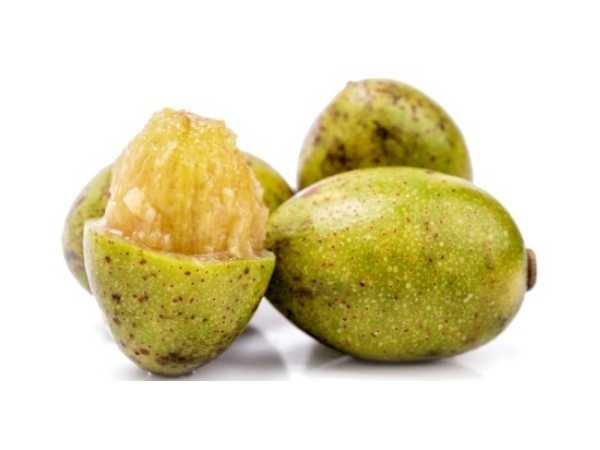

Spondias pinnata
Common Names: Ambalam, Wild Mango, Hog Plum, Indian Hog Plum
Local Name: Ambazhanga (Malayalam), Ambalam (Tamil), Amra (Hindi)
Family: Anacardiaceae
Origin: South and Southeast Asia
Plant Type: Perennial deciduous tree
Variety: Wild species — tart-flavoured hog plum
Average Lifespan: 50–80 years
| Growth Habit | Large deciduous tree with spreading crown |
| Plant Size | 15–25 meters tall; broad canopy up to 12 meters |
| Leaves | Pinnately compound, 20–40 cm long, 7–12 pairs of leaflets, deciduous in dry season |
| Flowers | Small, white to pale yellow, 5-petaled, borne in terminal panicles |
| Flower Characteristics | Fragrant; appear when tree is leafless; attract bees and flies |
| Fruit | Oval drupe, 3–5 cm long, fibrous flesh surrounding a hard stone |
| Fruit Color | Green when unripe, turning yellow-orange when mature |
| Seed Characteristics | Large, hard, fibrous stone with 1–5 seeds inside |
| Root System | Deep taproot with extensive lateral roots; good soil anchor |
| Climate | Tropical to warm subtropical; tolerates monsoon conditions |
| Temperature Range | 20–38°C ideal; tolerates brief cold spells to 5°C |
| Rainfall Requirement | 1000–3000 mm annually; thrives in monsoon regions |
| Soil Type | Adaptable; grows in laterite, alluvial, and sandy loam soils |
| Soil pH Preference | 5.5–7.5 |
| Sun Requirement | Full sun (6+ hours daily) |
| Spacing | 8–10 meters between trees |
| Irrigation Method | Rain-fed in most regions; supplemental irrigation in dry spells |
| Water Requirement | Moderate; drought-tolerant once established |
| Can it Grow in Pots? | Not recommended — grows too large for containers |
| Fertilizer Schedule | Twice yearly — before monsoon and after fruiting |
| Recommended Organic Fertilizers | Well-rotted FYM, compost, wood ash |
| Pesticide Frequency | Rarely needed; generally pest-resistant |
| Recommended Organic Pesticides | Neem oil if aphids appear |
| Mulching Practice | Leaf litter mulch around base; self-mulching from fallen leaves |
| Training System | Natural open canopy; minimal training needed |
| Pruning Time | After leaf drop in dry season |
| How to Prune | Remove dead and crossing branches; thin canopy for light penetration |
| Common Pests | Fruit fly, bark borer, leaf-eating caterpillars |
| Common Diseases | Anthracnose, powdery mildew, stem rot |
| Disease Prevention & Remedies | Good air circulation, remove infected parts, Bordeaux mixture for fungal issues |
| Flowering Months | February–April (during leafless period) |
| Fruiting Season | May–August; coincides with monsoon onset |
| Days to Harvest | 60–90 days from flowering |
| Harvest Indicators | Fruit turns yellow-orange, softens slightly, aromatic scent develops |
| Average Yield per Plant | 100–200 kg per tree per year (mature tree) |
| Pollination Type | Insect pollination (bees, flies) |
| Pollination Notes | Flowers attract diverse pollinators; cross-pollination improves fruit set |
| Pollination Details | Insect-pollinated; flowers produce nectar attracting bees and flies |
| Propagation by Seeds | Seeds germinate in 2–4 weeks; soak stone in water for 24 hours before sowing |
| Propagation by Cuttings | Large hardwood cuttings (30–60 cm) root readily in monsoon season |
| Propagation by Grafting | Approach grafting possible on Spondias rootstock for improved varieties |
| Water Usage | Low to moderate; drought-tolerant once established |
| Soil Conservation Practices | Deep roots prevent erosion; leaf litter enriches soil |
| Organic Practices Used | Minimal inputs needed; naturally hardy species |
| Companion Plants | Pepper vines, turmeric, ginger as understorey crops |
| Biodiversity Benefits | Provides food for birds and mammals; supports forest ecosystem |
| Commercial Production Regions | Kerala, Karnataka, Northeast India, Sri Lanka, Myanmar, Thailand |
| Market Uses | Fresh fruit, pickles, chutneys, fish curry ingredient |
| Processing Uses | Pickles, dried fruit, vinegar, traditional beverages |
| Market Value (Approx.) | ₹30–80 per kg (India); seasonal availability |
| Symbolism | Associated with monsoon season and traditional Kerala cuisine |
| Traditional Uses | Unripe fruit used in Kerala fish curries and pickles; bark used in traditional medicine for dysentery |
| Calories | 40–50 kcal per 100g |
| Dietary Fiber | 1.5–2.0 g per 100g |
| Vitamin C | 28–35 mg per 100g |
| Vitamin A | Moderate amounts as beta-carotene |
| Iron | 0.6 mg per 100g |
| Potassium | 150 mg per 100g |
| Antioxidants | Rich in polyphenols and flavonoids |
| Other Key Nutrients | Calcium, phosphorus, organic acids |
| Anxiety & Sleep | Not a primary use |
| Immune Support | Vitamin C content supports immune function |
| Anti-inflammatory Properties | Bark extract used in traditional medicine for inflammation and rheumatism |
| Heart Health | Antioxidant-rich fruit supports cardiovascular health |
| Digestive Health | Bark decoction used for dysentery and diarrhoea in Ayurveda |
Disclaimer: Information provided is for educational purposes only and not a substitute for medical advice.
Add your field observations here.